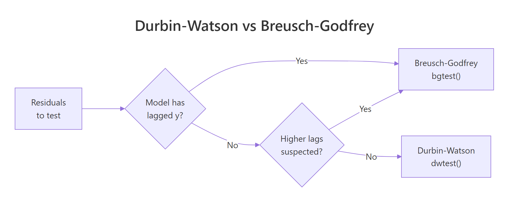

Autocorrelation in Residuals: Durbin-Watson & Breusch-Godfrey Tests
Autocorrelation in residuals means the errors from a regression are correlated across observations, usually in time. This breaks the independence assumption and makes standard errors, t-statistics, and p-values unreliable. The Durbin-Watson test checks for lag-1 correlation; the Breusch-Godfrey test generalises it to any lag and works when the model includes lagged dependent variables.
Why does autocorrelation in residuals matter?
OLS assumes each residual is independent of the others. When your data is ordered in time (monthly sales, daily prices, quarterly GDP), that assumption is often quietly violated. Residuals carry information from one observation to the next, and OLS reports standard errors that are far too small. The economics dataset shipped with ggplot2 makes the problem easy to see, so let's start there.
The fastest visual diagnostic is the autocorrelation function (ACF) of the residuals. If errors were independent, every bar past lag 0 would sit inside the dashed confidence band. Anything that pokes out is correlation that the model failed to explain.
The lag-1 residual correlation is 0.97, basically perfect. The accompanying ACF plot shows correlations marching down slowly across many lags, every bar miles outside the dashed band. That's a textbook signature of strong positive autocorrelation. The model is missing something time-dependent and OLS is treating each month as an independent draw when it clearly isn't.
Try it: Fit a different regression on the same economics data, this time predicting uempmed (median unemployment duration) from pce, and inspect the residual ACF. Does the autocorrelation pattern persist?
Click to reveal solution
Explanation: Both unemployment series are persistent over time, so a static OLS regression leaves the same kind of long-memory residual autocorrelation. The visual signature is nearly identical to the first model.
How does the Durbin-Watson test work?
The ACF gave you a verdict by eye. Now let's quantify it. The Durbin-Watson test compresses lag-1 residual correlation into a single number d. The intuition is dead simple: compare each residual to the one before it. If they look alike, d drops toward 0; if they flip sign, d climbs toward 4; if they're random, d lands near 2.
The formula adds up the squared differences between adjacent residuals and divides by the sum of squared residuals.
$$d = \frac{\sum_{t=2}^{n} (e_t - e_{t-1})^2}{\sum_{t=1}^{n} e_t^2}$$
Where:
- $e_t$ = the residual at time $t$
- $n$ = number of observations
- $d$ ranges from 0 (perfect positive autocorrelation) to 4 (perfect negative)
A useful rule of thumb is $d \approx 2(1 - \hat{\rho})$, where $\hat{\rho}$ is the lag-1 sample correlation of residuals. So d = 0.4 implies $\hat{\rho} \approx 0.8$, a strong positive correlation.
The lmtest package gives you this in one call.
A DW of 0.06 sits at the absolute bottom of the scale and the p-value is essentially zero. Translation: residuals at time t are nearly identical to residuals at time t-1. The default alternative hypothesis is "greater than zero" (positive autocorrelation), which is by far the most common situation in time-ordered data.
The car package offers a richer variant with a bootstrap p-value, useful when the sample is small or the asymptotic p-value looks suspicious.
Notice the bootstrap version shows the lag-1 autocorrelation directly: rho = 0.97. The d ≈ 2(1 − 0.97) = 0.06 rule lines up perfectly. Both implementations agree the residuals are catastrophically autocorrelated.
lag(y), the DW statistic is biased toward 2 and routinely accepts the null even when residuals are correlated. Use Breusch-Godfrey in that situation, see the next section.Try it: Re-run dwtest() on the ex_model from the previous exercise (the one predicting uempmed). What does the DW statistic look like, and is the p-value below 0.05?
Click to reveal solution
Explanation: The DW is almost zero, mirroring what the ACF showed visually. Both static OLS models on these economic series are dominated by residual autocorrelation.
When should you use the Breusch-Godfrey test instead?
Durbin-Watson only looks at lag 1. If your residuals are correlated at lag 4 (quarterly), lag 12 (monthly seasonal), or in some mixed pattern, DW can quietly miss it. Breusch-Godfrey generalises DW in two important ways:
- It tests any number of lags jointly via a single chi-squared statistic.
- It stays valid when the model includes lagged dependent variables, which DW does not.
The mechanics: regress the residuals on their own lags plus the original regressors, then run a Lagrange multiplier (LM) test on whether the lag coefficients are jointly zero. The flowchart below summarises which test to reach for.

Figure 1: When to use Durbin-Watson versus Breusch-Godfrey based on model features.
Calling Breusch-Godfrey at order 1 gives you a direct comparison with DW.
The LM statistic of 543 with one degree of freedom and a vanishing p-value confirms what DW already told us: lag-1 autocorrelation is severe.
But this is monthly data. The real concern is whether the residuals also carry yearly seasonality. We test 12 lags jointly.
The chi-squared statistic now has 12 degrees of freedom but the p-value is still effectively zero. The model has both short-run persistence and longer cycles in its residuals. Either alone would invalidate the standard errors, both together is a glaring sign of model misspecification.
Try it: Run Breusch-Godfrey at order 4 on model, the equivalent of testing for quarterly autocorrelation. Report the LM statistic.
Click to reveal solution
Explanation: The LM stat barely changes between orders 1, 4, and 12 because the lag-1 correlation already accounts for almost all the dependence. Adding more lags helps power but doesn't shift the conclusion here.
How do you choose the lag order for Breusch-Godfrey?
Picking the right order argument matters. Too few lags and you miss seasonal structure. Too many and the test loses statistical power. Three rules of thumb cover most situations:
- Match the seasonal frequency of the data. Monthly data → 12, quarterly data → 4, weekly data → 52.
- Use the partial ACF (PACF) of residuals. Significant spikes in the PACF at specific lags tell you where the autocorrelation lives.
- Apply the heuristic
order = min(10, floor(n/4))when you have no domain knowledge.
The PACF is to autocorrelation what individual coefficient tests are to a regression. It strips out indirect dependence so each spike represents the unique contribution of that lag.
A massive spike at lag 1 followed by smaller (but still significant) spikes at lags 2 and 3 means the bulk of the autocorrelation is short-range. There may also be a smaller bump near lag 12 if monthly seasonality is present. In that scenario, testing both order = 3 and order = 12 and reporting both is honest and informative.
Try it: Run Breusch-Godfrey on model at orders 1, 4, and 12. Print all three p-values and check whether the conclusion changes across orders.
Click to reveal solution
Explanation: R prints zero because the actual p-values are below machine precision. The conclusion is identical at every order: residuals are autocorrelated and the OLS standard errors are not safe to use.
What do you do if residuals are autocorrelated?
A failed test is not a dead end. You have four practical paths forward, ranked from least to most invasive:
- Heteroscedasticity and autocorrelation consistent (HAC) standard errors via Newey-West. Keeps your OLS coefficients, only fixes the standard errors.
- Add lagged predictors like
lag(y, 1)or seasonal dummies. Often the autocorrelation reveals dynamic misspecification you can model directly. - Generalised least squares (
nlme::gls(..., correlation = corAR1())) to build the autocorrelation structure into the estimator. - ARIMA-errors regression (
forecast::Arima(..., xreg = X)) when you also need to forecast.
The default first move is Newey-West. It's quick, defensible, and lets you keep the coefficient interpretation untouched. The sandwich package computes the corrected covariance matrix; lmtest::coeftest plugs it into a fresh inference report.
The shock is in the standard errors. The pop SE jumps from 0.0001 to 0.0012, a tenfold increase. The "highly significant" pce coefficient now sits at p = 0.31. Once you account for the dependence the OLS routine ignored, both predictors lose almost all their statistical evidence. The point estimates haven't changed, but the inference is now honest about how little independent information the data actually contains.
Try it: Compute Newey-West HAC standard errors for ex_model (the uempmed ~ pce regression) and compare the t-statistic on pce between vanilla OLS and HAC.
Click to reveal solution
Explanation: The naive t of 43.65 collapses to under 5 once HAC is applied. Still significant here, but the magnitude shift shows how badly OLS understated uncertainty.
Practice Exercises
Exercise 1: Run both tests on a fresh model
Fit lm(psavert ~ pce, data = economics) and run both Durbin-Watson and Breusch-Godfrey (at order 12) on the residuals. Save the two p-values into a named numeric vector called my_pvals.
Click to reveal solution
Explanation: Both tests reject the null. Personal savings rate has strong residual autocorrelation, just like unemployment. With a savings-rate model in particular, you'd want to investigate macroeconomic regime shifts (recessions, stimulus periods) as the underlying driver.
Exercise 2: Compare naive and HAC t-statistics
For the psavert ~ pce model, build a data frame called my_compare with three columns: coef, naive_t, and hac_t. Use NeweyWest(prewhite = FALSE) for HAC.
Click to reveal solution
Explanation: The HAC t-statistic on pce shrinks from -27 to -3.6 (an eight-fold reduction). The relationship is still significant, but the OLS report exaggerated the certainty by an order of magnitude.
Complete Example
Putting it all together: a full diagnostic and remediation pipeline for a fresh model on the same dataset.
Walking through it: the ACF and both tests scream autocorrelation, exactly as expected for a static regression on macro time series. The Newey-West correction shifts inference dramatically. The pop coefficient, originally significant, is now borderline (p = 0.09). The pce coefficient remains significant but with a much wider confidence interval. This is the report you'd actually publish.
Summary
| Situation | Use this test | Then... |
|---|---|---|
| Lag-1 only, no lagged DV | Durbin-Watson (dwtest) |
If reject, fix with HAC or model dynamics |
| Higher-order lags suspected | Breusch-Godfrey (bgtest, order > 1) |
Pick order via PACF or seasonal frequency |
| Model includes lagged DV | Breusch-Godfrey only | DW is biased toward 2 here |
| Want a single SE-only fix | OLS + Newey-West | sandwich::NeweyWest + lmtest::coeftest |
| Want to model the dynamics | GLS or ARIMA-errors | nlme::gls(..., corAR1()) or forecast::Arima |
References
- Durbin, J. & Watson, G. S. (1950). Testing for Serial Correlation in Least Squares Regression I. Biometrika 37 (3-4): 409-428. Link
- Breusch, T. S. (1978). Testing for Autocorrelation in Dynamic Linear Models. Australian Economic Papers 17: 334-355.
- Godfrey, L. G. (1978). Testing Against General Autoregressive and Moving Average Error Models When the Regressors Include Lagged Dependent Variables. Econometrica 46 (6): 1293-1301. Link
- Zeileis, A. & Hothorn, T. (2002). Diagnostic Checking in Regression Relationships. R News 2 (3): 7-10. Link
- Zeileis, A. (2004). Econometric Computing with HC and HAC Covariance Matrix Estimators. Journal of Statistical Software 11 (10). Link
- Fox, J. & Weisberg, S. (2019). An R Companion to Applied Regression, 3rd ed. Sage. Link
Continue Learning
- Regression Diagnostics in R, the parent post covering residuals vs fitted, Q-Q, scale-location, leverage, and Cook's distance plots in one workflow.
- Heteroscedasticity in R, the non-constant-variance diagnostic that often appears alongside autocorrelation in time-ordered models.
- Linear Regression Assumptions in R, how independence fits into the full set of OLS assumptions and what to check first.